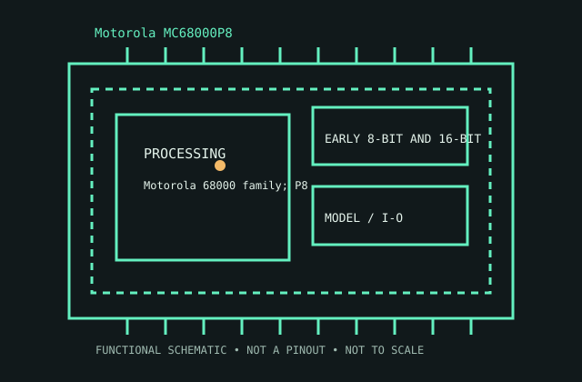

[ EARLY 8-BIT AND 16-BIT PROCESSORS // IDENTIFIED CPU ]
Motorola MC68000P8
Motorola 68000 family; P8 plastic DIP, introduced 1979. 32-bit programmer-visible registers, 16-bit external bus, 24-bit addressing, 8 MHz, 64-pin DIP.

MODEL IDENTIFICATION: Motorola MC68000P8. Match full model suffix, stepping and package to the physical item and cited documentation.
Recorded specifications
| Cataloged model | Motorola MC68000P8 |
|---|---|
| Era / family | Motorola 68000 family; P8 plastic DIP, introduced 1979. |
| Model specifications | 32-bit programmer-visible registers, 16-bit external bus, 24-bit addressing, 8 MHz, 64-pin DIP. |
| Compatibility | 68000 bus/support logic; unrelated to x86 software/socket. |
| Variants / limits | P8 denotes 8 MHz plastic DIP; PLCC/faster variants differ. |
Compatibility and variants
- 68000 bus/support logic; unrelated to x86 software/socket.
- P8 denotes 8 MHz plastic DIP; PLCC/faster variants differ.
- Check system-vendor CPU support, board revision, firmware minimum, package, memory, cooling and power before installation; similar socket naming does not prove compatibility.
Service and archival notes
Record package, clock, bus map and peripheral identities.
Archive the complete marking/OPN/sSpec, stepping, physical condition, tested host revision, firmware, memory population, cooling, and test conditions. Distinguish published limits from measurements.
Sources & further reading
- Model lookup — Motorola MC68000P8Model-specific package and specification cross-reference.
- Manufacturer technical documents — Motorola MC68000P8Archived manufacturer data sheets/manuals for the exact family.
- Computer History Museum — Motorola MC68000P8 historyInstitutional history of early microprocessor development.
Use the matching manufacturer data sheet revision and platform vendor’s CPU list for final fit decisions.